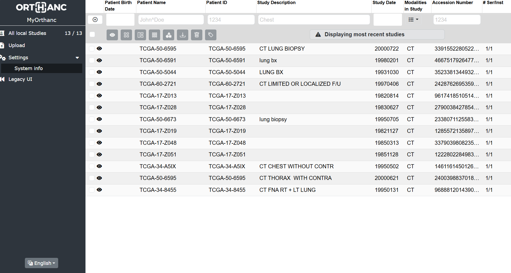

Software Overview
Orthanc Open-Source DICOM Server
Orthanc เป็นซอฟต์แวร์โอเพนซอร์สแบบ lightweight standalone DICOM server ที่ออกแบบมาเพื่อปรับปรุง DICOM flows ในโรงพยาบาล รองรับ DICOM networking เต็มรูปแบบ มี REST API สำหรับเข้าถึงข้อมูลผ่านโปรแกรม และขยายความสามารถได้ผ่าน plugin ecosystem
Software Name
Orthanc
ซอฟต์แวร์ DICOM Server สำหรับงานภาพทางการแพทย์
Developer / Organization
Orthanc Project
พัฒนาโดย Université catholique de Louvain (UCLouvain)
Orthanc
Explorer Web Interface
Brief overview
Orthanc
Orthanc ช่วยปรับปรุง DICOM flows ในโรงพยาบาล ให้รองรับ DICOM networking แบบเต็มรูปแบบ มี REST API สำหรับควบคุมผ่านโปรแกรม และขยายความสามารถได้ผ่าน plugin ecosystem

ภาพตัวอย่างหน้าจอ Orthanc Explorer 2 ซึ่งเป็น User Interface ของ Orthanc สำหรับเข้าถึงและจัดการข้อมูล DICOM
Developer
Orthanc Project
พัฒนาโดย Université catholique de Louvain (UCLouvain) เป็นโครงการโอเพนซอร์สสำหรับ standalone DICOM server
Organization
Université catholique de Louvain
ดูแลและพัฒนาต่อเนื่องโดยทีม UCLouvain
Quick Summary
Orthanc is a lightweight, open-source DICOM server designed to improve imaging flows in hospitals. It supports full DICOM networking (C-STORE, C-FIND, C-MOVE, C-GET), exposes a RESTful API for programmatic access, and is extensible through a plugin ecosystem including DICOMweb and custom database backends.
Why this software matters
A strong choice for medical imaging systems
Orthanc โดดเด่นในฐานะ DICOM server ที่ใช้งานได้จริงในหลายบริบท ตั้งแต่ โรงพยาบาลที่ต้องการระบบ PACS ขนาดเล็ก ไปจนถึงงานวิจัย medical imaging และการพัฒนา AI pipeline เพราะมีทั้ง REST API ที่ยืดหยุ่น DICOM networking ที่ครบมาตรฐาน และ plugin ecosystem ที่ขยายต่อได้ตามความต้องการ
Clear Identity
เป็น DICOM server ที่บอกได้ชัดเจนว่าทำอะไร ใช้กับระบบภาพทางการแพทย์โดยตรง
Open Community
มี community โอเพนซอร์สช่วยดูแล และมีทีม UCLouvain หนุนหลังอย่างต่อเนื่อง
Presentation Friendly
มี Orthanc Explorer เป็น Web UI ที่เข้าใจง่าย สามารถดูผลลัพธ์และจัดการข้อมูล DICOM ได้ทันทีผ่านเบราว์เซอร์
Core Capabilities
Key Features
DICOM Networking
Supports C-STORE, C-FIND, C-MOVE and C-GET for full DICOM network interoperability
REST API
Provides a RESTful API for accessing and managing DICOM data programmatically
Plugin Ecosystem
Extensible through plugins such as DICOMweb and database backends
Source
ข้อมูลที่ใช้ในหน้า Overview อ้างอิงจากแหล่งทางการของ Orthanc